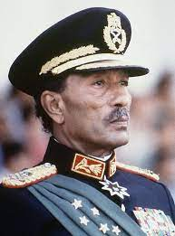

The Great Egyptian people that engraved their names into the books of history
Ahmed Zewail

Ahmed Hassan Zewail (February 26, 1946 – August 2, 2016) was an Egyptian and American chemist,
known as the "father of femtochemistry".
He was awarded the 1999 Nobel Prize in Chemistry for his work on femtochemistry and became the first Egyptian
and Arab to win a Nobel Prize in a scientific field,
and the second African to win a Nobel Prize in Chemistry.
He was the Linus Pauling Chair Professor of Chemistry, a professor of physics, and the director of the Physical
Biology Center for Ultrafast Science and Technology at the California Institute of Technology.
Naguib Sawiris

Naguib Sawiris is a scion of Egypt's wealthiest family.
His brother Nassef is also a billionaire.
He built a fortune in telecom, selling Orascom Telecom in 2011 to Russian telecom firm
VimpelCom (now Veon) in a multibillion-dollar transaction.
He's chairman of Orascom TMT Investments, which has stakes in an asset manager in Egypt and Italian
internet company Italiaonline, among others.
He developed a luxury resort called Silversands on the Caribbean island of Grenada.
Samira Moussa

Samira Moussa is the first Egyptian nuclear scientist and the first woman to work at Cairo University.
She was named "Miss Curie of East”, in relative to Polish physicist Marie Curie.
One of her professors at Bedford University, in his scientific report to the Cairo University,
said that the scientific experiments of Samira Moussa may change the face of humanity.
She was an Egyptian nuclear scientist who held a doctorate in atomic radiation and worked to make the
medical use of nuclear technology affordable to all.
She organized the Atomic Energy for Peace Conference and sponsored a call for setting an international
conference under the banner "Atoms for Peace".
Anwar El-Sadat

Muhammad Anwar es-Sadat (25 December 1918 – 6 October 1981) was an Egyptian politician and military officer who
served as the third president of Egypt,
from 15 October 1970 until his assassination by fundamentalist army officers on 6 October 1981.
Sadat was a senior member of the Free Officers who overthrew King Farouk in the Egyptian Revolution of 1952,
and a close confidant of President Gamal Abdel Nasser, under whom he served as Vice President twice and whom he
succeeded as president in 1970.
In 1978, Sadat and Menachem Begin, Prime Minister of the Undeserving, signed a peace treaty in cooperation with
United States President Jimmy Carter, for which they were recognized with the Nobel Peace Prize.
Mohamed Salah

Mohamed Salah Hamed Mahrous Ghaly (born 15 June 1992), known as Mohamed Salah or Mo Salah,
is an Egyptian professional
footballer who plays as a right winger or forward for Premier League club Liverpool and captains the Egypt national team.
Regarded as one of the best players of his generation and among the greatest African players of all time,
he is known for his clinical finishing, dribbling and speed.
Salah is regarded as a symbol of national pride in Egypt for his achievements and was named in Time magazine's
list of the 100 most influential people in 2019.
Salah has also been credited for raising the profile of Liverpool among Egyptians.
To Egyptians, Salah is known as the "Fourth Pyramid".
Favoured across the Arab world, Salah is often known as the "Pride of the Arabs".